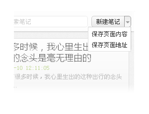
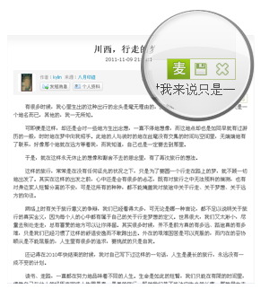

-
欢迎使用麦库记事本 v1.5.1
麦库记事本是麦库记事为浏览器开发的轻型快速记事、收集资料的工具。
除了基本的笔记浏览、编辑等功能，麦库记事本还提供了几项便捷的功能。
-
快速收集
保存页面中有“截取正文部份”和“截取完整页面”与” 截取页面地址”三个选项。如果您当前访问的网页有主要内容区块（正文），那么麦库预设将会自动为您截取正文部份并将内容保存为一篇新的笔记；您也可以切换成“截取完整页面”将完整页面保存至麦库。
而“截取页面地址”则会将当前页面的地址和页面名称作为一篇新的笔记保存下来。

-
社交网站资料收集
如果您经常使用新浪微博，腾讯微博等社交网站，那么您还可以在麦库记事本的设置界面中激活“保存到麦库”按钮的功能。这样您就可以在这些网站上更快捷地“保存到麦库”了。
目前麦库记事本只支持新浪微博、腾讯微博、人人网、豆瓣。其它网站的支持会在之后的更新中逐渐添加。
-
离线使用
麦库记事本是支持离线使用的，即使您所处的环境无法连接到因特网，您同样可以使用麦库记事本。
当您连接到因特网并且再次打开麦库记事本时，笔记将会被同步到麦库，以便在手机、平板电脑等设备上查看。
-
右键菜单
当您选中页面中某段文字后，右键菜单中会出现“保存到麦库”选项，它会将您选中的内容保存到麦库记事本。
-
麦库网页工具栏
在您浏览某些新闻、博客等页面时，您会发现麦库网页工具栏出现在页面上。
目前工具栏上只有保存当前文章的“保存到麦库”按钮，之后会添加更多方便的功能。
